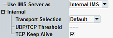
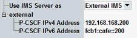

The first settings select between internal and external IMS server usage and configure related basic settings.


Selects whether the internal IMS server of the DAU or an external IMS network is used for IMS services.
For usage of an external IMS server, only the settings in this section are relevant. For the internal IMS server, also all other settings of the "IMS" tab are relevant.
Usage of the internal IMS server requires option R&S CMW-KAA20.
Remote command:Configures whether TCP or UDP is used by the internal IMS server.
"Default" | The threshold is fixed and equals 1300 characters per SIP message. For shorter SIP messages, UDP can be used. For longer SIP messages, TCP is used. For details, see RFC 3261, section 18.1.1. |
"TCP Only" | TCP is always used, independent of the message length. |
"UDP Only" | UDP is always used, independent of the message length. |
"Custom" | The threshold is configurable via the setting "UDP/TCP Threshold" (number of characters per SIP message). For shorter SIP messages, UDP is used. For longer SIP messages, TCP is used. |
Selects whether the IMS server sends TCP keep-alive messages or not.
Remote command:Configures the IPv4 and IPv6 address of an external P-CSCF.
Remote command: